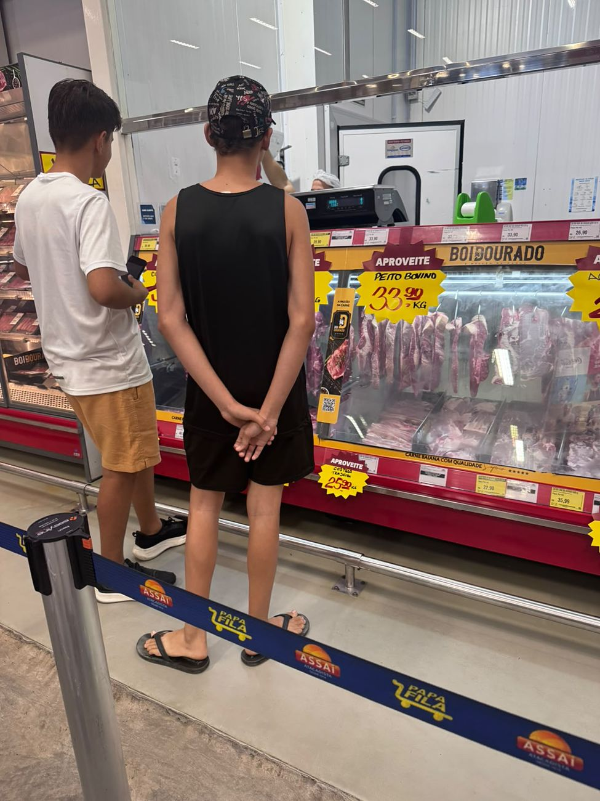
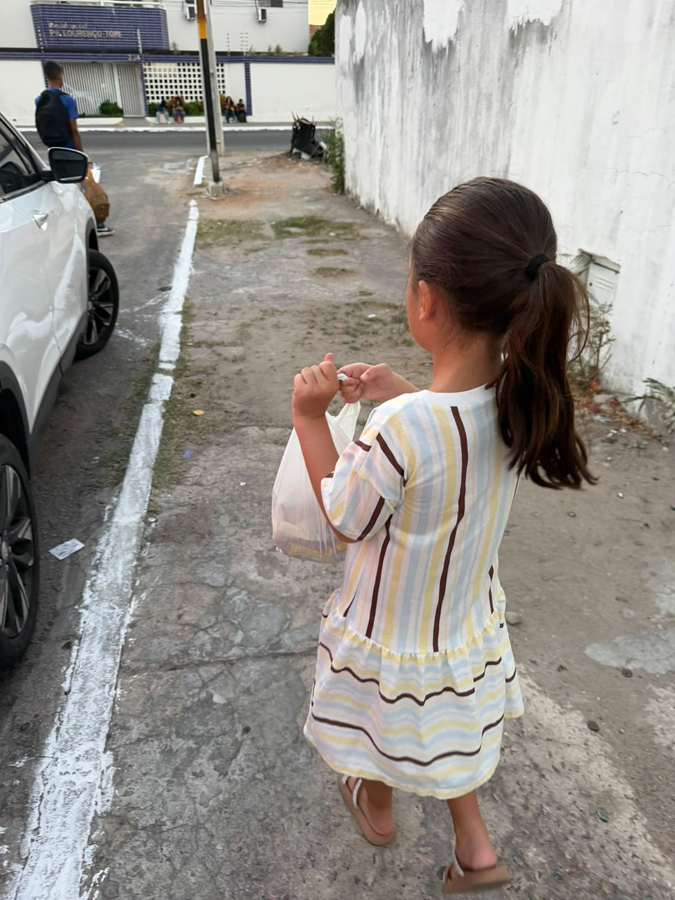

Treinamento de iniciativa comportamental
Uma ida ao supermercado, passo a passo.
Mapeamento para rastreio visualPlano de modelagemGeneralização
Da antecipação em sessão à experiência no mercado, cada etapa é planejada para que a criança assuma o protagonismo: consultar a lista visual, buscar os produtos e comunicar o que procura.
Role para acompanhar a jornada →
Antecipação e simulação
Na clínica, o mercadinho simulado prepara a criança: a lista, a busca, a fila e o pagamento são ensaiados antes.
2Rastreio visual
Mapeamento para rastreio visual
A lista com imagens orienta o olhar: a criança aprende a percorrer as prateleiras e localizar cada item.
Plano de modelagem
Cada passo é modelado e reforçado, até que ela execute sozinha: comparar, conferir e marcar na lista.
Tomar a iniciativa
Percorrer o ambiente, procurar e identificar os itens por conta própria. Ninguém precisa pedir.

5ComunicaçãoComunicar e esperar a vez
Pedir no balcão, aguardar, responder. Situações reais de interação social, com apoio só quando precisa.
Concluir a tarefa
Organizar as compras, interagir com quem atende e finalizar o que começou.

✓Missão cumpridaAutonomia de verdade
Sacola na mão. Uma habilidade que nasceu na sessão agora faz parte da vida.
 Odontopediatria
Odontopediatria